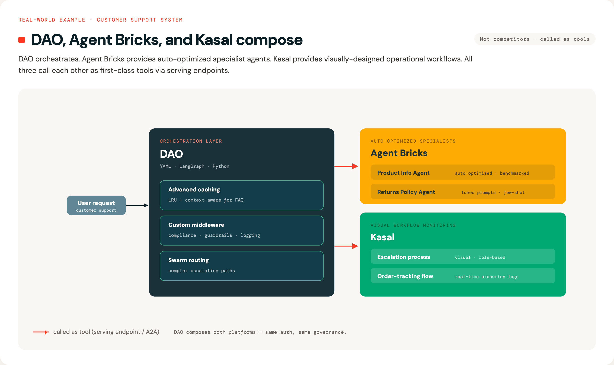

Why DAO?¶

For Newcomers to AI Agents¶
What is an AI Agent? Think of an AI agent as an intelligent assistant that can actually do things, not just chat. Here's the difference:
- Chatbot: "The temperature in San Francisco is 65°F" (just talks)
- AI Agent: Checks weather APIs, searches your calendar, books a restaurant, and sends you a reminder (takes action)
An AI agent can: - Reason about what steps are needed to accomplish a goal - Use tools like databases, APIs, and search engines to gather information - Make decisions about which actions to take next - Coordinate with other specialized agents to handle complex requests
Real-world example: "Find products that are low on stock and email the warehouse manager"
- A chatbot would say: "You should check inventory and contact the warehouse manager"
- An AI agent would: Query the database, identify low-stock items, compose an email with the list, and send it
What is Databricks? Databricks is a cloud platform where companies store and analyze their data. Think of it as a combination of: - Data warehouse (where your business data lives) - AI/ML platform (where you train and deploy models) - Governance layer (controlling who can access what data)
Databricks provides several tools that DAO integrates with: - Unity Catalog: Your organization's data catalog with security and permissions - Model Serving: Turns AI models into APIs that applications can call - AI Search (formerly Vector Search): Finds relevant information using semantic similarity (understanding meaning, not just keywords) - Genie: Lets people ask questions in plain English and automatically generates SQL queries - MLflow: Tracks experiments, versions models, and manages deployments
Why DAO? DAO brings all these Databricks capabilities together into a unified framework for building AI agent systems. Instead of writing hundreds of lines of Python code to connect everything, you describe what you want in a YAML configuration file, and DAO handles the wiring for you.
Think of it as: - Traditional approach: Building with LEGO bricks one by one (writing Python code) - DAO approach: Using a blueprint that tells you exactly how to assemble the pieces (YAML configuration)
Comparing Databricks AI Agent Platforms¶
Databricks offers three complementary approaches to building AI agents. Each is powerful and purpose-built for different use cases, teams, and workflows.
| Aspect | DAO (This Framework) | Databricks Agent Bricks | Kasal |
|---|---|---|---|
| Interface | YAML configuration files | Visual GUI (AI Playground) | Visual workflow designer (drag-and-drop canvas) |
| Workflow | Code-first, Git-native | UI-driven, wizard-based | Visual flowchart design with real-time monitoring |
| Target Users | ML Engineers, Platform Teams, DevOps | Data Analysts, Citizen Developers, Business Users | Business analysts, workflow designers, operations teams |
| Learning Curve | Moderate (requires YAML/config knowledge) | Low (guided wizards and templates) | Low (visual drag-and-drop, no coding required) |
| Underlying Engine | LangGraph (state graph orchestration) | Databricks-managed agent runtime | CrewAI (role-based agent collaboration) |
| Orchestration | Multi-agent patterns (Supervisor, Swarm) | Multi-agent Supervisor | CrewAI sequential/hierarchical processes |
| Agent Philosophy | State-driven workflows with graph execution | Automated optimization and template-based | Role-based agents with defined tasks and goals |
| Tool Support | Python, Factory, UC Functions, MCP, Agent Endpoints, Genie | UC Functions, MCP, Genie, Agent Endpoints | Genie, Custom APIs, UC Functions, Data connectors |
| Advanced Caching | LRU + Semantic caching (Genie SQL caching) | Standard platform caching | Standard platform caching |
| Memory/State | PostgreSQL, Lakebase, In-Memory; long-term memory with structured schemas and background extraction | Built-in ephemeral state per conversation | Built-in conversation state (entity memory with limitations) |
| Middleware/Hooks | Assert/Suggest/Refine, Custom lifecycle hooks, Guardrails | None (optimization via automated tuning) | None (workflow-level control via UI) |
| Deployment | Databricks Asset Bundles, MLflow, CI/CD pipelines | One-click deployment to Model Serving | Databricks Marketplace or deploy from source |
| Version Control | Full Git integration, code review, branches | Workspace-based (not Git-native) | Source-based (Git available if deployed from source) |
| Customization | Unlimited (Python code, custom tools) | Template-based workflows | Workflow-level customization via visual designer |
| Configuration | Declarative YAML, infrastructure-as-code | Visual configuration in UI | Visual workflow canvas with property panels |
| Monitoring | MLflow tracking, custom logging | Built-in evaluation dashboard | Real-time execution tracking with detailed logs |
| Evaluation | Custom evaluation frameworks | Automated benchmarking and optimization | Visual execution traces and performance insights |
| Best For | Production multi-agent systems with complex requirements | Rapid prototyping and automated optimization | Visual workflow design and operational monitoring |
When to Use DAO¶
✅ Code-first workflow — You prefer infrastructure-as-code with full Git integration, code reviews, and CI/CD pipelines
✅ Advanced caching — You need LRU + semantic caching for Genie queries to optimize costs at scale
✅ Custom middleware — You require assertion/validation logic, custom lifecycle hooks, or human-in-the-loop workflows
✅ Custom tools — You're building proprietary Python tools or integrating with internal systems beyond standard integrations
✅ Swarm orchestration — You need peer-to-peer agent handoffs (not just top-down supervisor routing)
✅ Stateful memory — You require persistent conversation state in PostgreSQL, Lakebase, or custom backends
✅ Configuration reuse — You want to maintain YAML templates, share them across teams, and version them in Git
✅ Regulated environments — You need deterministic, auditable, and reproducible configurations for compliance
✅ Complex state management — Your workflows require sophisticated state graphs with conditional branching and loops
When to Use Agent Bricks¶
✅ Rapid prototyping — You want to build and test an agent in minutes using guided wizards
✅ No-code/low-code — You prefer GUI-based configuration over writing YAML or designing workflows
✅ Automated optimization — You want the platform to automatically tune prompts, models, and benchmarks for you
✅ Business user access — Non-technical stakeholders (analysts, product managers) need to build or modify agents
✅ Getting started — You're new to AI agents and want pre-built templates (Information Extraction, Knowledge Assistant, Custom LLM)
✅ Standard use cases — Your needs are met by UC Functions, MCP servers, Genie, and agent endpoints
✅ Multi-agent supervisor — You need top-down orchestration with a supervisor routing to specialists
✅ Quality optimization — You want automated benchmarking and continuous improvement based on feedback
When to Use Kasal¶
✅ Visual workflow design — You want to see and design agent interactions as a flowchart diagram
✅ Operational monitoring — You need real-time visibility into agent execution with detailed logs and traces
✅ Role-based agents — Your use case fits the CrewAI model of agents with specific roles, goals, and tasks
✅ Business process automation — You're automating workflows where agents collaborate sequentially or hierarchically
✅ Data analysis pipelines — You need agents to query, analyze, and visualize data with clear execution paths
✅ Content generation workflows — Your agents collaborate on research, writing, and content creation tasks
✅ Team visibility — Operations teams need to monitor and understand what agents are doing in real-time
✅ Quick deployment — You want to deploy from Databricks Marketplace with minimal setup
✅ Drag-and-drop simplicity — You prefer designing workflows visually rather than writing configuration files
Using All Three Together¶
Many teams use multiple approaches in their workflow, playing to each platform's strengths:
Progressive Sophistication Path¶
- Design in Kasal → Visually prototype workflows and validate agent collaboration patterns
- Optimize in Agent Bricks → Take validated use cases and let Agent Bricks auto-tune them
- Productionize in DAO → For complex systems needing advanced features, rebuild in DAO with full control
Hybrid Architecture Patterns¶
Pattern 1: Division by Audience
- Kasal: Operations teams design and monitor customer support workflows
- Agent Bricks: Data analysts create optimized information extraction agents
- DAO: ML engineers build the underlying orchestration layer with custom tools
Pattern 2: Composition via Endpoints - Agent Bricks: Creates a Knowledge Assistant for HR policies (optimized automatically) - Kasal: Designs a visual workflow for employee onboarding that calls the HR agent - DAO: Orchestrates enterprise-wide employee support with custom payroll tools, approval workflows, and the agents from both platforms
Pattern 3: Development Lifecycle - Week 1: Rapid prototype in Agent Bricks to validate business value - Week 2: Redesign workflow visually in Kasal for team review and monitoring - Week 3: Productionize in DAO with advanced caching, middleware, and CI/CD
Real-World Example: Customer Support System¶

Interoperability¶
All three platforms can call each other as tools:
- Deploy any agent to Databricks Model Serving or Databricks Apps
- Reference it using the first-class type: serving_endpoint (Model Serving) or type: app (Databricks Apps) tool types
- Or use type: a2a for external A2A agents (Vertex, Crew.ai, ADK, …)
- Compose complex systems across platform boundaries
Example:
# In DAO configuration
tools:
# Agent Bricks endpoint — discovery maps task=llm/v1/chat → completions
hr_assistant:
function:
type: serving_endpoint
endpoint: agent-bricks-hr-assistant
description: "HR assistant built in Agent Bricks"
# Kasal endpoint — same shape, different upstream
workflow_monitor:
function:
type: serving_endpoint
endpoint: kasal-workflow-monitor
description: "Workflow monitor built in Kasal"
See configuration-reference.md → First-Class Agent Tools for the full reference and offline-safety guarantees.